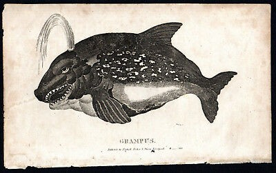

Multum nautārum in puppe stābant putantēs quid iam facere possent. Nam paulō ante flagellum quaerēns lōlīginis ingentis ex undīs atrīs virum miserum ē prōrā rapuerat, cuius ululātūs in mare eum secūtī erant. “Precēs,” inquit ūnus nauta, “ad Neptūnum offerre dēbēmus.” Alius dīxit “Aliquis deōs offendit. Necesse est eum sorte invenīre et nōs ex illō expurgēre, aliter certē ille monstrum nefārium nōbīs reveniat!”
Posteā nauta nōmine Decebal vōcem fēminae in mente audīre coepit: “Decebal, sciō cum vōcem meam audiās, semper ipsum insānīre putās, sed hoc tempus magnī mōmentī est tē mē auscultāre.” Cui Decebal: “Nē iterum fīat! Māne medicāmentum meum sūmere dēbuī!” Vōx perrēxit, “Neptūnus hodiē occupātus est, et nisi mē auscultāveris, vōs omnēs ad ūnum perītī eritis!” Deinde, Decebal digitōs in auribus posuit et magnā vōce clāmāvit “Tē audīre nōn possum!” Vōx fēminae suspīrāvit et “Digitōs in auribus pōnere nōn prōderis,” inquit, “quod in mente tuā loquor.”
Subitō undae displōduērunt multīs flagellīs nautās petentibus; nautae perterritī hūc illūc currēbant. Ūnus ē pede pendēbat, alius per āerem in faucēs lōlīginis iactus est. Deinde lōlīgō impetum in nāvem ipsam fēcit, flagellīs circum alveum implicātīs ūnōque flagellō mālum frangēntī. Vōx in capite Decebalis “Decebal!” iterum iterumque clāmāvit. At cui tandem Decebal “Fīat! Quid mē facere vīs?!” Decebalī vōx: “Claudē oculōs tuōs et mē vidēre poteris. Repete accūrātē verba mea movēque manūs tuās sīcut meās.” Chaō ubīque, Decebal vōcī pāruit lābrīs moventibus manibusque suīs fōrmās in āere pingentibus. Ēn, vestīgia lūcis digitōs secuta erant et undae maris tranquillāre vidēbantur.
Repente magnō clāmōre delphīnus ingēns ē mare ēmersit et cum tōtō corpore suō impetum in lōlīginem fēcit. Velut dracō et elephantus in proeliō mortiferō inter sē pugnantēs, lōlīgō bracchia circum delphīnum contraxit et delphīnus dentēs in lōlīginem dēfīxit. Per longum tempus rēs ita sē habēbat, dōnec tandem ambō sub fluctibus mersī sunt. Diū autem delphīnus sōlus appāruit lentēque ē cōnspectū natābat. Gubernātor “Arrrr!* Ille delphīnus,” inquit, “Grampus appellātur et piscem maiorem pol numquam vīdī! Illa bēstia vītās nostrās servāvit!”
Decebal attonitus vōcem rogāvit “Quis es tū?” At cui vōx fēminae “Nōmen mihi est Psychē.”
Lōlīgō (-inis f) bēstia maris est, quae longum corpus octōque bracchia habet. Sorte: Quandō hominēs sūmunt partēs strāmentī aut aleam iaciunt ut aliquem ēligant. Alveus (-ī m) pars exterior nāvis est. Chaos (chaī -n) contra ordinem est. *"Arrrr!" est sonitus, quem pīrātae facere solent.